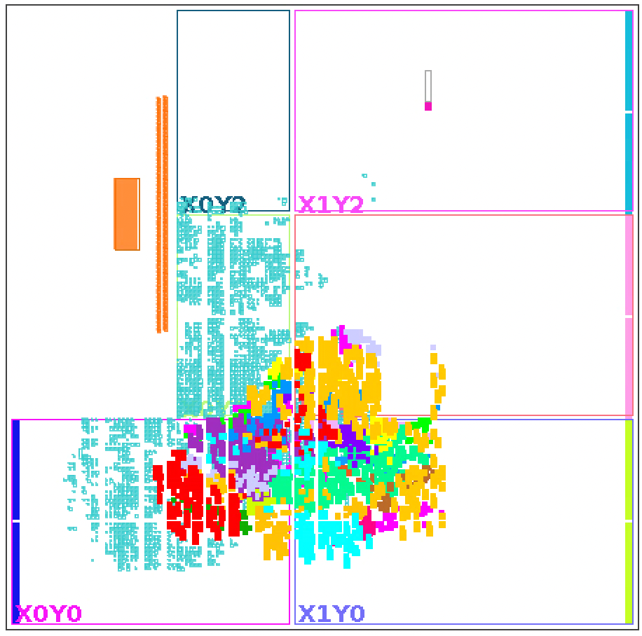

In this notebook we will take the first steps with training a BDT with xgboost, then translating it to HLS code for FPGA with conifer
Key concepts:
model training
model evaluation
coniferconfiguration and conversionmodel emulation
model synthesis
accelerator creation
For some use cases, the Forest Processing Unit might be an easier entry point as no FPGA synthesis is required for supported boards. Read more about the FPU here: https://ssummers.web.cern.ch/conifer/fpu.html
import xgboost as xgb
import matplotlib.pyplot as plt
import plotting
import numpy as np
from scipy.special import softmax
from sklearn.preprocessing import LabelEncoder, OneHotEncoder
import conifer
import json
import os
import sys
os.environ['PATH'] = os.environ['XILINX_VITIS'] + '/bin:' + os.environ['PATH']
# enable more output from conifer
import logging
logging.basicConfig(stream=sys.stdout, level=logging.WARNING)
logger = logging.getLogger('conifer')
logger.setLevel('DEBUG')
# create a random seed at we use to make the results repeatable
seed = int('hls4ml-tutorial'.encode('utf-8').hex(), 16) % 2**31
print(f'Using conifer version {conifer.__version__}')
Could not import conifer ydf converter
runtime module could not be imported. Interacting with accelerators will not be possible.
runtime module could not be imported. Interacting with FPUs will not be possible.
---------------------------------------------------------------------------
KeyError Traceback (most recent call last)
Cell In[1], line 12
9 import os
10 import sys
---> 12 os.environ['PATH'] = os.environ['XILINX_VITIS'] + '/bin:' + os.environ['PATH']
14 # enable more output from conifer
15 import logging
File ~/miniconda3/envs/hls4ml-tutorial/lib/python3.10/os.py:680, in _Environ.__getitem__(self, key)
677 value = self._data[self.encodekey(key)]
678 except KeyError:
679 # raise KeyError with the original key value
--> 680 raise KeyError(key) from None
681 return self.decodevalue(value)
KeyError: 'XILINX_VITIS'
Load dataset#
Load the jet tagging dataset.
Note: you need to run part1 first.
X_train_val = np.load('X_train_val.npy')
X_test = np.load('X_test.npy')
y_train_val_one_hot = np.load('y_train_val.npy')
y_test_one_hot = np.load('y_test.npy')
classes = np.load('classes.npy', allow_pickle=True)
We need to transform the test labels from the one-hot encoded values to labels
le = LabelEncoder().fit(classes)
ohe = OneHotEncoder().fit(le.transform(classes).reshape(-1, 1))
y_train_val = ohe.inverse_transform(y_train_val_one_hot.astype(int))
y_test = ohe.inverse_transform(y_test_one_hot)
Train a BDT#
We’ll use xgboost’s XGBClassifier with:
Parameter |
Explanation |
|---|---|
|
25 trees |
|
maximum tree depth of 5 |
clf = xgb.XGBClassifier(n_estimators=25, max_depth=5, learning_rate=1.0, random_state=seed).fit(X_train_val, y_train_val)
Validate performance#
Now we check whether the trained model is any good. We’ll plot the ROC curve.
from sklearn.metrics import accuracy_score
from tensorflow.keras.models import load_model
# load the KERAS model from part 1
model_ref = load_model('model_1/KERAS_check_best_model.h5')
y_ref = model_ref.predict(X_test)
# compute predictions of the xgboost model
y_xgb = clf.predict_proba(X_test)
print(f'Accuracy baseline: {accuracy_score(np.argmax(y_test_one_hot, axis=1), np.argmax(y_ref, axis=1)):.5f}')
print(f'Accuracy xgboost: {accuracy_score(np.argmax(y_test_one_hot, axis=1), np.argmax(y_xgb, axis=1)):.5f}')
fig, ax = plt.subplots(figsize=(9, 9))
_ = plotting.makeRoc(y_test_one_hot, y_ref, classes, linestyle='--')
plt.gca().set_prop_cycle(None) # reset the colors
_ = plotting.makeRoc(y_test_one_hot, y_xgb, classes, linestyle='-')
# add a legend
from matplotlib.lines import Line2D
lines = [
Line2D([0], [0], ls='--'),
Line2D([0], [0], ls='-'),
]
from matplotlib.legend import Legend
leg = Legend(ax, lines, labels=['part1 Keras', 'xgboost'], loc='lower right', frameon=False)
ax.add_artist(leg)
Now we’ll convert this model to FPGA firmware with conifer. We first need to create a configuration in the form of a dictionary. The quickest way to get started is to create a default configuration from the intended target backend (xilinxhls for us). Each backend may have different configuration options, so getting the configuration this way helps enumerate the possible options.
We will print the configuration, modify it, and print it again. The modifications are:
set the
OutputDirectoryto something descriptiveset the
XilinxPartto the part number of the FPGA on the Alveo U50
cfg = conifer.backends.xilinxhls.auto_config()
# print the config
print('Default Configuration\n' + '-' * 50)
plotting.print_dict(cfg)
print('-' * 50)
# modify the config
cfg['OutputDir'] = 'model_5/'
cfg['XilinxPart'] = 'xcu250-figd2104-2L-e'
# print the config again
print('Modified Configuration\n' + '-' * 50)
plotting.print_dict(cfg)
print('-' * 50)
Convert and write#
Convert the xgboost model to a conifer one, and print the help to see what methods it implements.
Then write the model, creating the specified output directory and writing all the HLS files to it. We also save the xgboost model itself.
Other converters:#
conifer has converters for several popular BDT training libraries. Each one is used like: conifer.converters.convert_from_<library>(model, config)
The converters are:
sklearnxgboostydftmvaonnx(exposingcatboostandlightGBM)
# convert the model to the conifer representation
conifer_model = conifer.converters.convert_from_xgboost(clf, cfg)
# print the help to see the API on the conifer_model
help(conifer_model)
# write the project (writing HLS project to disk)
conifer_model.write()
# save the conifer model - we can load this again later
clf.save_model('model_5/xgboost_model.json')
Explore#
Browse the files in the newly created project directory to take a look at the HLS code.
The output of !tree model_5 is:
model_5/
├── bridge.cpp
├── build_hls.tcl
├── firmware
│ ├── BDT.cpp
│ ├── BDT.h
│ ├── my_prj.cpp
│ ├── my_prj.h
│ └── parameters.h
├── hls_parameters.tcl
├── my_prj.json
├── my_prj_test.cpp
├── tb_data
└── vivado_synth.tcl
files under
firmwareare the HLS implementation of the modelmy_prj.jsonis the saved convertedconifermodel that can be loaded again without the originalxgboostmodeltclscripts are used for synthesizing the project
Emulate#
Before starting the lengthy FPGA build process, we should validate that our conversion was successful and that the choice of precision was suitable with a bit-accurate emulation. To do this we need to run the HLS C++ code on the CPU with some test data first. This is like the HLS C Simulation step, but rather than writing a C++ testbench and invoking vitis_hls to run csim, conifer implements Python bindings for the HLS, just like hls4ml.
We first need to compile (which uses the C++ compiler), then we can make predictions
conifer_model.compile()
y_hls = conifer_model.decision_function(X_test)
Compare#
Now we check whether the emulated predictions are good. To do this we’ll plot the ROC curve again with the HLS predictions overlaid.
y_hls_proba = softmax(y_hls) # compute class probabilities from the raw predictions
print(f'Accuracy baseline: {accuracy_score(np.argmax(y_test_one_hot, axis=1), np.argmax(y_ref, axis=1)):.5f}')
print(f'Accuracy xgboost: {accuracy_score(np.argmax(y_test_one_hot, axis=1), np.argmax(y_xgb, axis=1)):.5f}')
print(f'Accuracy conifer: {accuracy_score(np.argmax(y_test_one_hot, axis=1), np.argmax(y_hls_proba, axis=1)):.5f}')
fig, ax = plt.subplots(figsize=(9, 9))
_ = plotting.makeRoc(y_test_one_hot, y_ref, classes, linestyle='--')
plt.gca().set_prop_cycle(None) # reset the colors
_ = plotting.makeRoc(y_test_one_hot, y_xgb, classes, linestyle=':')
plt.gca().set_prop_cycle(None) # reset the colors
_ = plotting.makeRoc(y_test_one_hot, y_hls_proba, classes, linestyle='-')
# add a legend
from matplotlib.lines import Line2D
lines = [
Line2D([0], [0], ls='--'),
Line2D([0], [0], ls=':'),
Line2D([0], [0], ls='-'),
]
from matplotlib.legend import Legend
leg = Legend(ax, lines, labels=['part1 Keras', 'xgboost', 'conifer'], loc='lower right', frameon=False)
ax.add_artist(leg)
Build#
Now we’ll run the Vitis HLS and Vivado synthesis. HLS C Synthesis compiles our C++ to RTL, performing scheduling and resource mapping. Vivado synthesis synthesizes the RTL from the previous step into a netlist, and produces a more realistic resource estimation. The latency can’t change during Vivado synthesis, it’s fixed in the RTL description.
After the build completes we can also browse the new log files and reports that are generated.
Warning: this step might take around 10 minutes
conifer_model.build(synth=True, vsynth=True)
Report#
If the synthesis completed successfuly, we can extract the key metrics from the reports and print them out.
The section "vsynth" contains the report from the Vivado RTL synthesis, which is usually lower, and more realistic than the HLS report.
report = conifer_model.read_report()
plotting.print_dict(report)
Deployment with pynq#
There are two main ways to deploy a BDT to an accelerator card with conifer:
build a static accelerator with Xilinx HLS backend
use the dynamic accelerator Forest Processing Unit (FPU)
Getting started with the FPU is straightforward. For a supported board, you will need only the converted model JSON, and a bitfile that can be downloaded from the conifer website. Read more about the FPU here: https://ssummers.web.cern.ch/conifer/fpu.html
However, without a physical device there’s not much to show, so in this section we’ll see how to deploy the model that we already trained as a static accelerator to a pynq-z2 board.
We’ll use the AcceleratorConfig part of the configuration that we previously left undefined.
pynq_model_cfg = conifer.backends.xilinxhls.auto_config()
pynq_model_cfg['OutputDir'] = 'model_5_pynq' # choose a new project directory
pynq_model_cfg['ProjectName'] = 'conifer_jettag'
pynq_model_cfg['AcceleratorConfig'] = {
'Board': 'pynq-z2', # choose a pynq-z2 board
'InterfaceType': 'float', # floating point for the data I/O (this is default)
}
# print the config
print('Modified Configuration\n' + '-' * 50)
print(json.dumps(pynq_model_cfg, indent=2))
print('-' * 50)
Supported boards#
Here we print the list of supported boards, so you can see what else works “out of the box”. It’s relatively easy to add other Zynq SoC or Alveo boards, for example to add an Alveo U50 card targeting xilinx_u50_gen3x16_xdma_5_202210_1 platform:
u50 = conifer.backends.boards.AlveoConfig.default_config()
u50['xilinx_part'] = 'xcu50-fsvh2104-2-e'
u50['platform'] = 'xilinx_u50_gen3x16_xdma_5_202210_1'
u50['name'] = 'xilinx_u50_gen3x16_xdma_5_202210_1'
u50 = conifer.backends.boards.AlveoConfig(u50)
conifer.backends.boards.register_board_config(u50.name, u50)
# This is the full list of supported boards:
print(f'Supported boards: {conifer.backends.boards.get_available_boards()}')
Load the model#
We load the JSON for the conifer model we previously used, applying the new configuration just defined. We’ll see that the FPGA part specified by the board overrides the XilinxPart specified in the default.
pynq_model = conifer.model.load_model('model_5/my_prj.json', new_config=pynq_model_cfg)
pynq_model.write()
Build the model#
Now we run build again, running HLS Synthesis, Logic Synthesis and Place & Route, finally producing a bitfile and an archive of files that we’ll need to run inference on the pynq-z2 board.
Warning: this step might take around 20 minutes to complete.
The floorplan of the bitfile should like something like this, where the individual tree modules are highlighted in different colours:
pynq_model.build(synth=True, bitfile=True, package=True)
Inference on pynq-z2#
Running inference on the pynq-z2 would look like this:
download the
model_5/conifer_jettag.ziparchive from this notebookupload
conifer_jettag.zipto the pynq-z2 device and unzip itstart a jupyter notebook on the
pynq-z2and run the following code:
import conifer
accelerator = conifer.backends.xilinxhls.runtime.ZynqDriver('conifer_jettag.bit', batch_size=1)
X = ... # load some data
y_pynq = accelerator.decision_function(X)